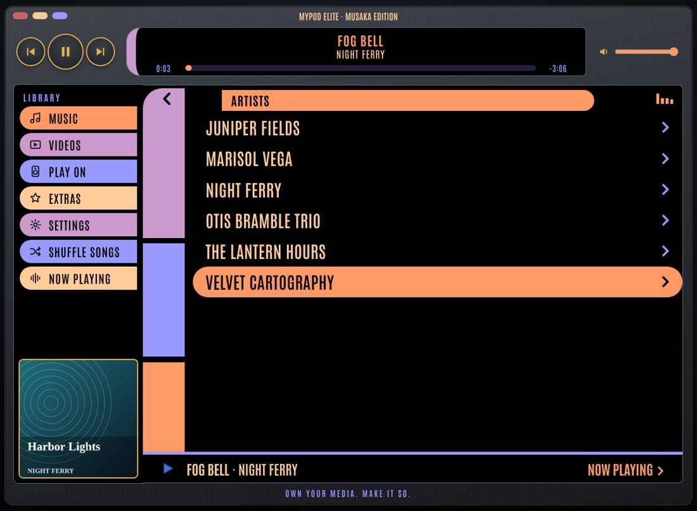
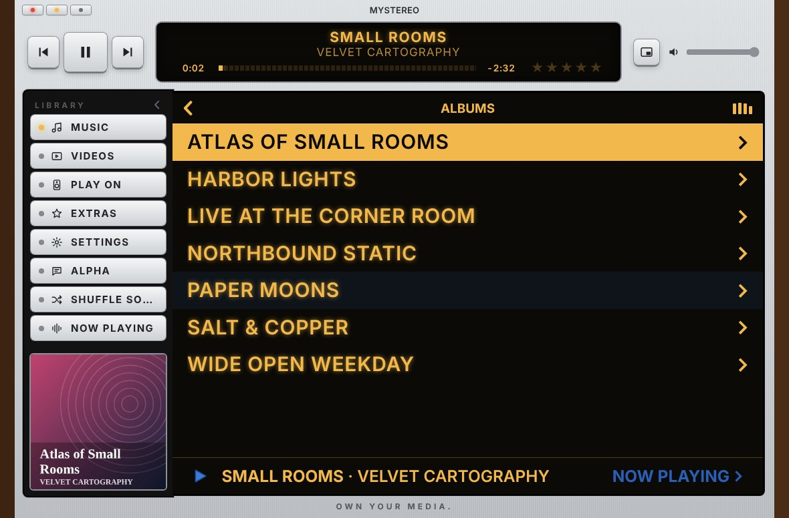
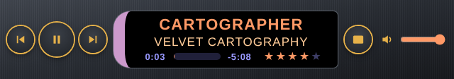
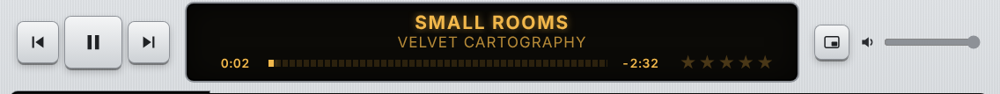

Chapter 1
Getting Started
Put myStereo on your Home Screen, sign in to your own Plex server, and your collection is in your pocket.
Add myStereo to your Home Screen
- Open myStereo’s web address in Safari on your iPhone.
- Tap the Share button, then Add to Home Screen.
- Open myStereo from its new icon. It runs full screen, just like an app.
Sign in to Plex
- Go to Settings › Music Sources › Plex › Sign In with Plex.
- Tap Open Plex sign-in and sign in on the Plex page.
- Come back to myStereo. It finds your server on its own.
No Plex? Use music on this phone
- Go to On Phone › Add Music. (Not signed in? It’s right on the sign-in screen as Music on This Phone.)
- Pick songs from the Files app. You can choose many at once. On a computer or Android phone, Add a Folder brings in a whole folder.
- myStereo reads each song’s name, artist, album and cover art, and keeps its own copy, so it plays even with no internet.
Chapter 2
The Knob and Buttons
Turn the knob to scroll. Press its center to choose. The buttons around it do the rest.
- Back
- The lit button in the middle of the row. It’s the same reach for a left or right thumb.
- Home
- Back to the main menu, the screen labeled myStereo, from anywhere.
- Media
- Music, Mixtapes, On Phone and Videos, all in one place.
- Extras, Setup
- Jump straight to that part of myStereo from anywhere. The one you’re in lights up.
- Select
- Press the center of the knob to choose what’s highlighted.
- Previous, Play / Pause, Next
- The three buttons along the bottom. Previous restarts the song first, then goes back a song.
Or just touch the screen
- Choose
- Tap any item.
- Scroll
- Drag the list up or down.
- Go back
- Tap the title bar, or press Back.
Chapter 3
Finding Music
Everything starts in Music.
- Genres
- Every genre in your library. Pick one for Shuffle Songs, or browse its Artists, Albums, and Songs.
- Mixtapes and On Phone
- These live on the main menu, right under Music. Mixtapes are the ones you make here. On Phone is music stored on this phone: albums you saved from Plex and files you added.
- Search
- Type with the iPhone keyboard. Results show genres, artists, albums, and songs.
- Shuffle Songs
- On the main menu. Plays your library in random order.
- Now Playing bar
- Shows on every menu while music plays. Tap it to jump to Now Playing.
Mixtapes
Your Plex playlists are still under Music › Playlists. Mixtapes are the ones you make right here, the old way: a C60 or C90 with a Side A and a Side B and only so much room on each. When a side is full, it’s full, so you choose what makes the cut. Or pick No Limit for one long side, like a playlist.
Make one
- Choose Mixtapes on the main menu (or press MEDIA), then + New Mixtape at the end of the list. Name it, then pick C60 (30 minutes a side), C90 (45 minutes a side) or No Limit.
- myStereo starts recording, and a red ● REC light shows in the corner. Now browse anywhere, Albums, Artists, Search, and choose songs. Each one goes onto the tape instead of playing, and a note tells you which side it went on and how much room is left. Side A fills first, then Side B.
- Choose Stop Recording on the mixtape when you’re done. While you’re recording, Recording sits at the top of the main menu so you can get back to it.
- Give it a Label, say who it’s For, and pick a Label Color.
Play one
- Open the mixtape and choose Play, or Play Side A / Play Side B from the Side rows. If you’ve listened before, the top row says Resume and picks up exactly where you stopped.
- The album art on Now Playing becomes the mixtape’s label, and a cassette shows in the top corner the whole time. Tap the label to see every song on that side.
- A mixtape plays straight through, in order. At the end of Side A it stops, just like a tape. Press the knob (or ▶❙❙) to flip to Side B.
- REW and FF
- While a mixtape plays, the skip buttons under the knob become REW and FF. Tap to jump 15 seconds. Hold to keep winding, right into the next or last song. There’s no shuffle, repeat or skipping on a tape.
- Flip and Rewind
- On Now Playing, the buttons under the screen show Flip (turn the tape over, where that side left off) and Rewind (back to the start of this side) in place of Shuffle and Repeat.
- Where you stopped
- Each mixtape remembers its side, song and spot on this device, like a real cassette.
Change one
- Record More
- Turns recording back on, so you can add songs to whatever room is left.
- Take a Song Off
- Open Side A or Side B on the mixtape, then Take a Song Off. Press twice to take it off.
- Tape
- Switch between C60, C90 and No Limit. Switching to No Limit puts both sides together; switching back splits them again, or tells you if there’s too much music to fit.
- Label, For, Label Color
- Rename it, change who it’s for, or pick another color for the label.
- Erase Mixtape
- Press twice. It’s erased everywhere it was saved.
Share, save and print
- On all your devices
- When you’re signed in to Plex, each mixtape is saved to Plex as a playlist, so it shows up in myStereo on your phone, your computer and Elite, and as a playlist in Plexamp. The label, color and sides come along; where you stopped stays on each device. Songs added under On Phone stay on that phone. The line at the bottom of the Mixtapes list shows whether the highlighted tape is saved. If one doesn’t show up on another device, press Mixtapes › Sync with Plex on both; it tells you what it found. Both devices need to be signed in to the same Plex account.
- Dub to Phone
- Saves every song on the mixtape to your phone, so it plays with no signal and no data. You’ll see the cassette recording while it works, and the offline sign while it plays.
- Print the J-Card
- Makes a printable insert for a real cassette case: the cover, the spine and the song list. Print it, or choose Save File and print it later from Files.
On Phone: music with no signal, no data
Save albums and playlists to your phone before a road trip, a flight or a weekend at the cabin. Music on your phone plays with no signal and uses none of your data plan.
- Open any album or playlist and scroll to the bottom. The last row says Save to Phone. Choose it.
- The Saving screen shows which song it’s on and how far along it is.
- Keep myStereo open while it saves. Your screen stays on by itself. If you leave the app or the phone sleeps, it picks up where it left off when you come back.
- When it’s done, the album says Saved to Phone ✓. Find everything under On Phone on the main menu, together with any files you added yourself.
- The offline sign
- A small cloud with a line through it shows in the corner, and “Offline · no data used” shows on Now Playing, whenever the song is coming from your phone instead of streaming.
- No signal
- Open Music with no connection and myStereo goes straight to On Phone.
- Quality
- Settings › On Phone › Quality. High (the default) sounds the same on earbuds and in the car. Original keeps the full file from Plex and takes about three times the room. Space Saver fits about three times as much.
- Play Saved Copies First
- On from the start. Songs you’ve saved play from your phone even when you have a signal, which saves your data plan.
- Keep 5-Star Songs
- Turn it on and every song you rate five stars is saved to your phone on its own.
- Erasing
- Settings › On Phone shows how much room saved music is using and how much is left. Erase an album or everything. Your Plex library isn’t touched.
Chapter 4
Now Playing
On Now Playing, the button row becomes Scrub · Rate · Back · Shuffle · Repeat (on a mixtape, Shuffle and Repeat become Flip and Rewind). Tap one and the knob controls it, or press Mode in the knob’s center to step through them. A light shows which one the knob is set to.
- Scrub
- Turn the knob to move through the song.
- Rating
- Turn the knob or tap a star to give the song 1 to 5 stars. Turn all the way down to clear it. The stars then show under the album name.
- Shuffle
- Off, or Songs. Starts with the song you picked, then mixes the rest.
- Repeat
- Off, Track (this song again), or Album (the whole list again).
You can also tap a choice right on the screen. Tap the lit button again, or wait a few seconds, and the knob goes back to Normal.
What’s playing next
On Now Playing, tap the album art. You’ll see the whole album, mixtape side or list that’s playing, with the current song marked ♪. Tap any song to jump to it.
Ratings and rated playlists
Music › Ratings turns your stars into playlists that update themselves: My Top Rated (4 and 5 stars), one list for each star count, and Recently Rated. Each list starts with Shuffle, and they play on Plexamp too.
Your ratings are yours alone. They live on this myStereo, not in Plex, so nobody else on your server sees them.
Chapter 5
Cover Flow
Turn your iPhone sideways and your albums fill the screen.
- Swipe left or right to flip through albums. Flick to fly.
- Tap the middle album to turn it over and see its songs.
- Tap a song to play it. Turn the phone upright, or tap Done, to go back.
Chapter 6
Videos
Your movies and TV shows, right on the big display.
- Choose Videos on the main menu, then Movies, TV Shows, or Continue Watching.
- Pick something. It starts playing right on the display.
- Turn your iPhone sideways to watch full screen. Tap the video to show the controls.
- Play / Pause
- ▶❙❙ or the center of the knob.
- Title & time
- The video fills the screen. Tap the picture to show the title bar and how far along you are. They tuck away after a few seconds.
- Skip
- Turn the knob to move 10 seconds. ⏮ ⏭ jump 30.
- Stop
- BACK, or Done when you’re watching sideways.
Chapter 7
Play On Another Speaker
Use myStereo as a remote for Plexamp anywhere in the house.
- Make sure Plexamp is open on the other device.
- Go to Play On and choose it. A checkmark shows your pick.
- Everything you play now plays there. Choose This myStereo to play on your phone again.
AirPlay and Bluetooth
Choose Play On › AirPlay & Bluetooth and your iPhone’s own speaker list pops up: HomePods, Apple TVs, AirPlay speakers, Bluetooth headphones and car stereos. Pick one and myStereo keeps playing there. It works for videos too.
Chapter 8
Extras
Games
Choose Extras › Games. There are four, and myStereo remembers your best score in each.
Brick. The classic. Turn the knob or drag on the screen to move the paddle. Press the center to launch the ball.
Music Quiz. myStereo plays a few seconds from a random song in your library. Pick its name from four choices. The faster you answer, the more points you get. Ten songs a round. It plays on your phone, so it needs your Plex library, not the demo.
Snake. Eat the dots to grow, and don’t hit the walls or your own tail. Turn the knob clockwise to turn right and back to turn left, or press ⏭ and ⏮. On the screen, swipe the way you want to go. Press the center or tap to pause.
Minesweeper. Open every square that isn’t a mine. A number tells you how many mines touch that square. Tap to open, press and hold to plant a flag. Prefer the knob? Turn it to move the box, use ⏮ and ⏭ to jump a row, press the center to open, and ⏯ to flag.
Steering with the knob. In games, tap the top, bottom, left or right edge of the knob to use it like a direction pad.
Flip it over
Swipe sideways on the empty part of the case, like the space around the knob, and myStereo turns over to show its polished steel back, a few stickers, and an engravingdark gunmetal back, engraved myStereo Elite · Musaka Edition. Swipe again to flip it back. The music keeps playing.
Secrets
Two surprises are hidden in the controls: one in the knob, one in the Back button. Patience helps with both.
Sleep Timer
Choose 15, 30, 45, or 60 minutes, or End of Song. A small moon appears in the top bar while it’s set.
Chapter 9
Settings
Settings is grouped so it’s quick to scan: Look (Faceplate, Display, Knob Color, Knob Center, Corner, Large Text, Menu Art), Sound (Tone, Clicker), Music Sources (Plex, Server, Demo Library, Network Share), On Phone, Ratings Backup, Help and About.
Desktop Mode
On a computer, myStereo can become a jukebox window built for a mouse. See Chapter 10.
Tone
Make it sound the way you like. Presets are the easy way: pick one and you hear it right away while you scroll.
- Phone Speaker
- Fills out tiny speakers.
- Earbuds
- A little more punch.
- Car
- Cuts through road noise.
- Quiet Listening
- Full sound at low volume.
- Warm · Bright
- Softer like a record, or crisp vocals and cymbals.
- Talk & Podcasts
- Clearer voices.
Prefer to fine-tune? Bass and Treble go from −8 to +8, and Loudness adds body at low volume, like the button on an old receiver. Reset to Flat puts it all back.
Faceplate
Choose the finish. Scroll the list to preview each one, press the center to keep it. The buttons and lights change to match.
- Black
- White
- Auto
- Silver
- Walnut
- Pink
- Blue
- Green
- Gold
- Cosmic Orange
- Red
- Black & Red
- Purple
- Zune Brown
Auto is white when your phone is in light mode and black in dark mode.
Mixtapes play on the Cassette Deck. Press Play or Resume on a mixtape and myStereo turns over to show a portable tape player, run by its buttons. By default it wears your faceplate’s colors; Settings › Look › Deck Color also offers Night Black, Metallic Blue and Pearl & Teal. Press ‹ myStereo (or swipe across the deck) to turn it back while the tape keeps playing, and open Now Playing (or the cassette in the corner) to see the deck again. Prefer the old screen? Set Settings › Look › Mixtapes Play On to Now Playing. The window shows your mixtape’s label, the reels turning, which side is up and a tape counter. No song names, no clock. Make Mixtape and Send Mixtape sit above the window, Flip in its corner, and the tape keys below it.
- Night Black
- Metallic Blue
- Pearl & Teal
- STOP/EJECT
- Stops the tape. Press it again while stopped to open the door.
- Picking a tape
- With the door open, tap a label in the window to load that tape.
- MAKE MIXTAPE
- Turns myStereo back over and starts a new blank tape: name it, pick C60, C90 or No Limit, then record.
- SEND MIXTAPE
- Shows the people you share your Plex server with. Tap a name to email them (or share by text when there’s no email), or pick Someone Else. They get a link that opens the tape in their own myStereo, with its label, both sides and who it’s from. When they open it, myStereo checks which server the tape plays from: if you share that server with them, it offers to switch them to it; if you don’t yet, it says so and offers the same songs from their own library; if they aren’t signed in to Plex, it keeps the tape waiting until they are. You’ll also find Send Mixtape on each tape’s menu.
- PLAY
- Plays, picking up where you left off. The key stays down while it plays; press it again to pause.
- REW and FF
- Tap to jump 15 seconds, hold to wind, with the sound of the tape.
- FLIP
- The button in the corner of the tape window turns the tape over. At the end of Side A, auto reverse turns it to Side B on its own.
- ‹ myStereo
- Turns the deck back over to your faceplate (so does swiping across it). The tape keeps playing. Make and record mixtapes there.
Special Editions, at the bottom of the list, holds the one-of-a-kind faceplates:
- BC Edition
- JL Edition
- Away Mission
- Field Scanner
- Runaway Anchor
The JL Edition is a beige 1995 desktop PC, floppy drive and all. Field Scanner is a rugged sci-fi field instrument with signal-orange keys and a ridged aluminum knob. Pair it with the Field Scanner display. Runaway Anchor is navy and gold with the anchor on the knob, and the bar’s logo on the back.
Display
The screen’s look, separate from the faceplate. Light is black lettering on white, Dark is white on black. LCD is the pale green of an old car stereo, Amber and Teal glow like a hi-fi display. Classic LCD and Mini LCD are throwbacks to small players. The two Auto choices follow your phone’s light or dark setting. Special Editions at the bottom has Starship Console and Field Scanner, a glowing teal readout with scan lines, Runaway Anchor in navy and gold, and Blade, glowing white-blue lettering on deep black.
- Server
- Switch between Plex servers. Each one remembers its music library.
- Corner
- What shows in the top-right corner of the screen: the time, a little equalizer that dances while music plays, both (the clock that turns into the equalizer while music plays), the phone or Plexamp player the music is going to, or nothing.
- Knob Color
- Give the knob its own color, or leave it on Match Case. Scroll the list to preview.
- Knob Center
- Same idea for the knob’s center button. Mix and match: a gold knob with a black center on a blue faceplate, say.
- Menu Art
- Album art drifting beside the main and Music menus. Off to start; turn it on here.
- Large Text
- Bigger, easier-to-read menus. On from the start.
- Clicker
- The little tick you hear as you scroll.
- How to Use
- A short version of this guide, right on your myStereo.
Chapter 10
Desktop Mode
On a computer, myStereo turns into a stereo receiver built for a mouse: wood side panels, a glowing display and real-looking keys. There’s no knob to turn. Everything is a click.


Turn it on
- Open myStereo in a browser on your computer.
- Click Switch to Desktop Mode under the player, or go to Settings › Desktop Mode.
- myStereo remembers your choice. Next time it opens straight to the jukebox.
What’s on the screen
- Play buttons
- Previous, play or pause, and next, at the top left.
- Song display
- The song, artist and a progress bar. Click the bar to jump ahead. Click the artist to switch to the album name. Click the time to switch between time left and total time.
- Stars
- Five stars at the right end of the song display. Click one to rate the song. Click the same star again to take one away.
- Volume
- The slider at the top right.
- Library
- Music, Videos, Play On, Extras, Settings, Alpha and Shuffle Songs down the left side. The album cover at the bottom opens Now Playing.
- Hide the Library
- Click the arrow next to LIBRARY to fold the list away for a wider view. Click it again to bring it back.
- Lists
- Click any row to open it. Scroll with your mouse. Click the title bar to go back.
The Mini Player


Click the Mini Player button next to the volume slider, or the yellow button in the corner. In Chrome and Edge, the Mini Player floats in its own small window above everything else. Close it, or click Bring it back, to return to the full window. In Safari and Firefox, the window shrinks to just the control bar. Click the button again for the full player.
Corner buttons
- Red
- Back to the handheld player.
- Yellow
- Mini Player.
- Green
- Full screen.
Chapter 11
myStereo Elite
Want extras like playing music straight from your own network share? myStereo Elite is for you. It’s the same myStereo with features that take a little setup, for people who like to tinker.
- Network Share
- Play music from your own WebDAV server, with no Plex needed. Browse its folders under Music › Network Share.
- Starship looks
- The Away Mission faceplate, with starship-console pill buttons, and the Starship Console display. (Both are in regular myStereo’s Settings too.)
- LG Edition
- A laser-sword hilt: a chrome faceplate with a black ridged grip, keys that glow blue, and the Blade display. Pick it under Settings › Look › Faceplate and Settings › Look › Display, or open ownyourmedia.club/lg.
- Musaka back
- Flip it over: a dark gunmetal back engraved myStereo Elite · Musaka Edition.
- Its own space
- Elite keeps its own settings, Plex sign-in, ratings and music, so you can keep both on your Home Screen.
Get myStereo Elite
- Open ownyourmedia.club/elite in Safari on your iPhone (or Chrome on Android).
- Tap Share, then Add to Home Screen. It gets its own myStereo Elite icon.
Set up a network share
- Your share needs an address that starts with https://. Tailscale, a Cloudflare tunnel or a reverse proxy can give it one.
- The server has to let myStereo in. The easiest way is a recent version of rclone:
rclone serve webdav /path/to/Music --user NAME --pass SECRET --allow-origin https://ownyourmedia.club - In Elite, go to Settings › Music Sources › Network Share › Connect a Share and enter the address, username and password.
- Open Music › Network Share, pick a folder, and press Play All or Shuffle.
Chapter 12
Alpha Testing
myStereo is brand new, and you’re one of its first testers. Thank you. Your notes go straight to BC.
Send feedback
- Go to Alpha › Send Feedback, or Alpha › Share an Idea.
- Pick Something broke, An idea or I love this, and write a few words.
- Press Send to BC. Your mail app opens with the note ready. Press Send there.
What to test
Alpha › What to Test lists what BC most wants to hear about right now.
Chapter 13
Tips and Troubleshooting
- Can’t reach Plex
- Make sure your server is on and Remote Access is turned on in Plex. Then try Settings › Music Sources › Plex › Reconnect.
- Song won’t play
- myStereo tries a second, converted stream automatically. If it still won’t play, the file may be damaged on your server.
- Plexamp ignores myStereo
- Open Plexamp on that device, then pick it again in Play On.
- Icon looks old
- Delete myStereo from your Home Screen and add it again from Safari. Your sign-in and settings stay.
- Black strip at the bottom
- Some iPhones keep a strip at the bottom of Home Screen apps for themselves. myStereo fits its buttons above it.
- Music stops when the screen locks
- Set Settings › Sound › Tone to Flat, then close and reopen myStereo.
- Start fresh
- Settings › Music Sources › Plex › Sign Out, then sign in again.